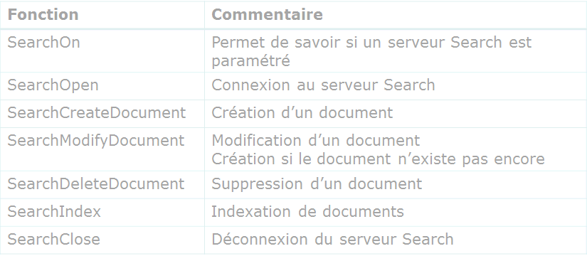

Pour d’autres applications que le zoom, des fonctions Diva Search permettent de notifier la création, modification ou suppression d’un document au serveur.
Le développeur dispose de quelques fonctions d’interface avec le serveur Search pour déclencher l’indexation en « presque temps réel » d’un ou de plusieurs documents.
Les fonctions sont préfixées par Search. L’aide du langage Diva donne le détail des paramètres de chaque fonction.
